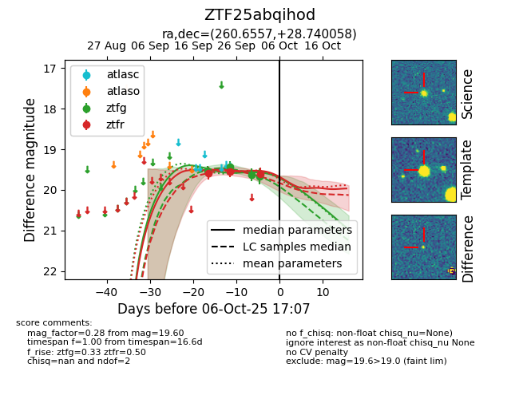
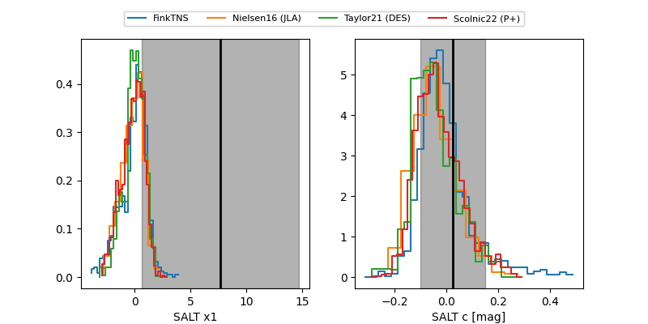

FINK: ZTF25abqihod
Lasair: ZTF25abqihod
ALeRCE: ZTF25abqihod
ZTF25abqihod (ztf,fink)
equatorial (ra, dec) = (260.6557,+28.74006)
galactic (l, b) = (51.7631,+30.94067)


last ztfg=19.67, ztfr=19.60
4 ztfg, 3 ztfr detections